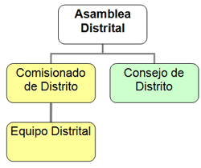

| Toda Región está dividida en Distritos Scout. Cada Distrito está formado por un número no menor de tres (3) y no mayor de nueve (9) Grupos Scout. El Distrito está integrado por: a) La Asamblea Distrital: se reune por lo menos una vez al año y está conformada por el Comisionado de Distrito, quien la convoca y preside, los delegados de los Grupos Scout registrados, los Asistentes y Cooperadores Distritales, sin derecho a voto y otros miembros activos adultos y cooperadores de los Consejos degrupo, sin derecho a voto. b) El Consejo de Distrito: es la instancia natural y permanente que supervisa el funcionamiento de los Grupos Scout del Distrito. Sustituye en sus funciones a la Asamblea Distrital cuando ésta no está reunida. Está constituido por el Comisionado de Distrito, quien lo convoca y preside; los Jefes o Subjefes de Grupo, con un voto por Grupo Scout; los Asistentes y Cooperadores Distritales, sin derecho a voto y el Comisionado Regional cuando tenga a bien participar, sin derecho a voto. c) El Comisionado de Distrito con sus asistentes y cooperadores. |  |
| Los Grupos de un Distrito deben
encontrarse próximos geográficamente para hacer posible una mejor
comunicación, supervisión y asesoramiento. << Ver mapa Scout de Falcón>> |
|
|
Volver arriba |
|